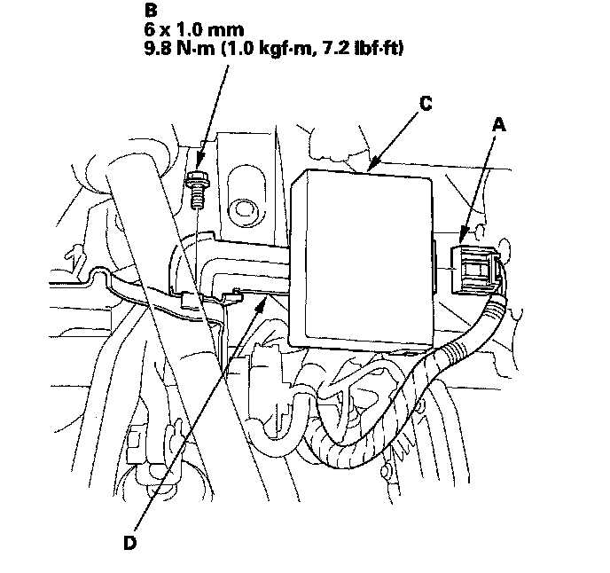
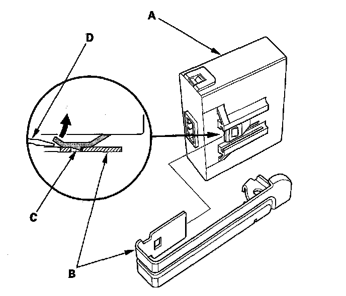

Tire Pressure Module: Service and Repair
TPMS Control Unit ReplacementNOTE: Make sure the TPMS control unit mounting bracket is not bent or twisted as this may affect its communication with the initiators and the tire pressure sensors.
1. Remove the driver's dashboard undercover.
2. Disconnect the TPMS control unit connector (A).
NOTE: The TPMS control unit is located on the brake pedal bracket.

3. Remove the flange bolt (B) from the brake pedal bracket.
4. Remove the TPMS control unit (C) from the bracket (D).
5. Remove the TPMS control unit (A) from the bracket (B).
NOTE: While separating the TPMS control unit from the bracket, release the hook (C) on the TPMS control unit using a flat-tipped screwdriver (D) and push up to release it from the bracket.

6. Install the TPMS control unit in the reverse order of removal.
NOTE: Make sure the TPMS control unit is properly installed. You will hear a click when the TPMS control unit is securely mounted on the bracket.
7. Connect the HDS and memorize the tire pressure sensor IDs. Do not memorize the IDs automatically.